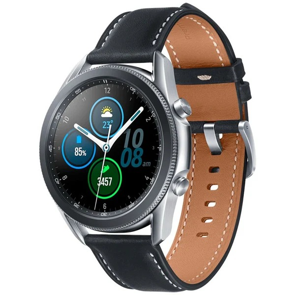
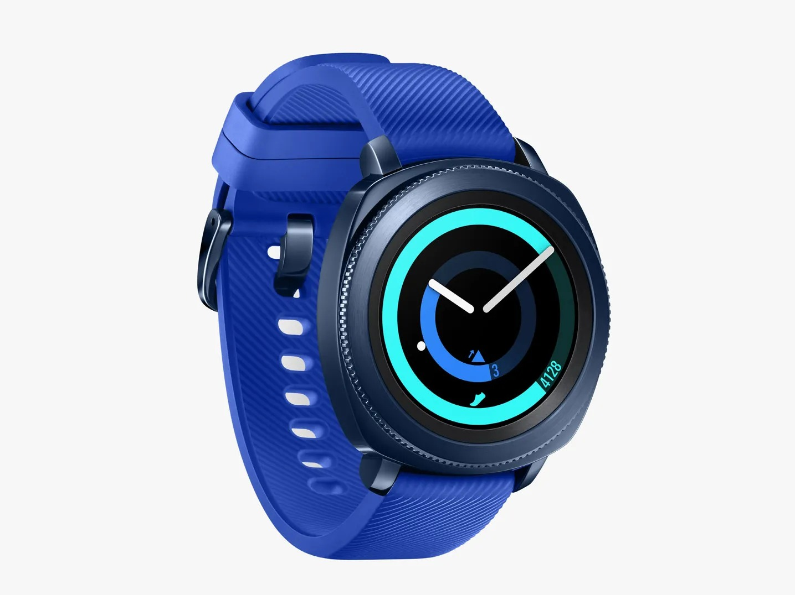
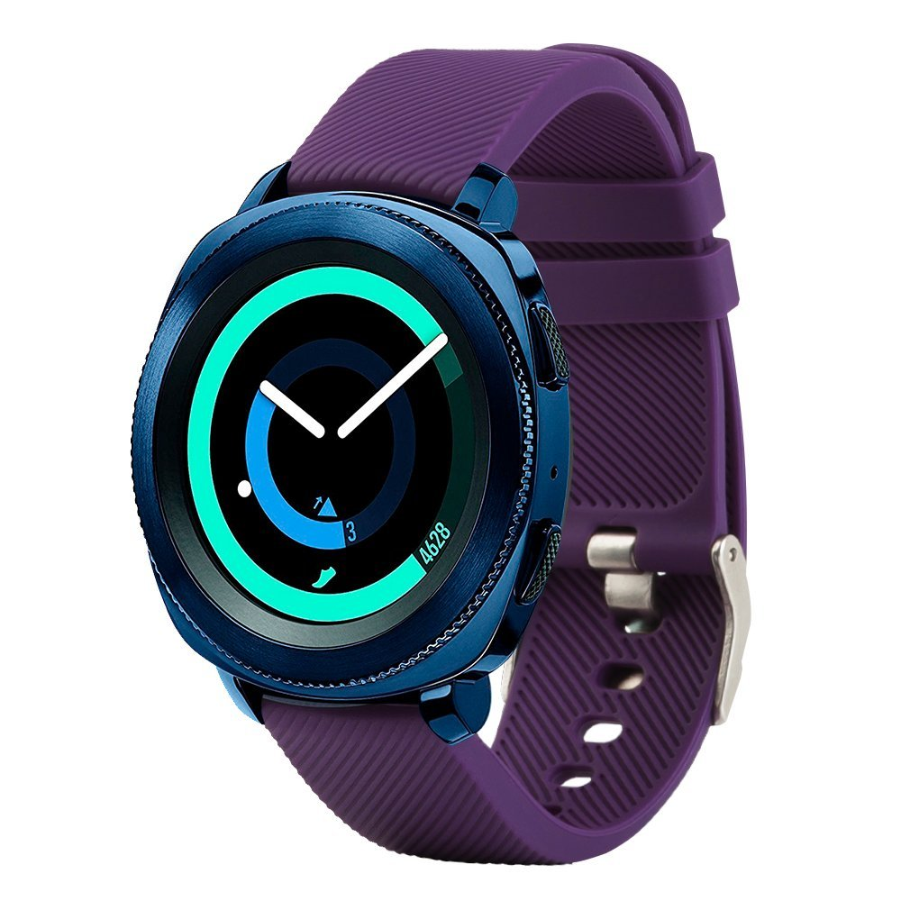
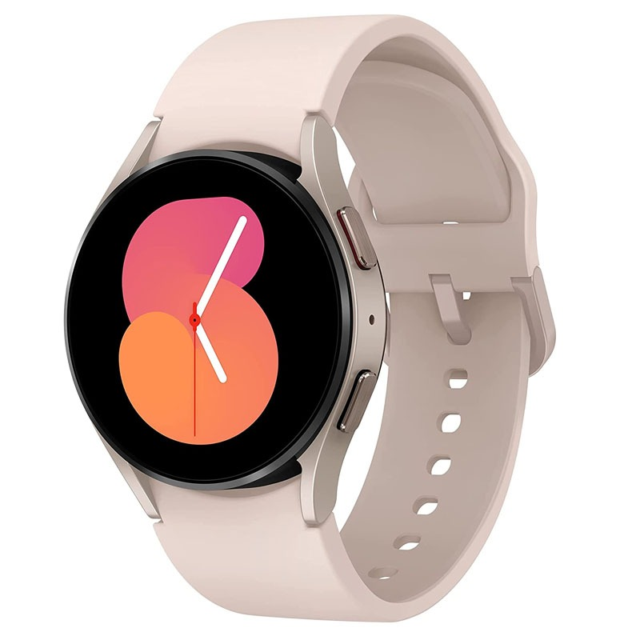
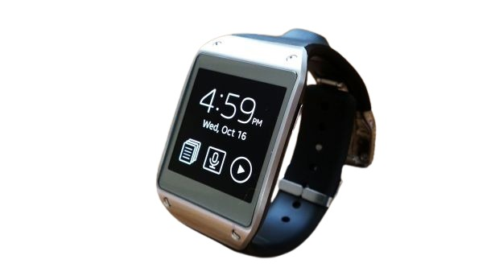
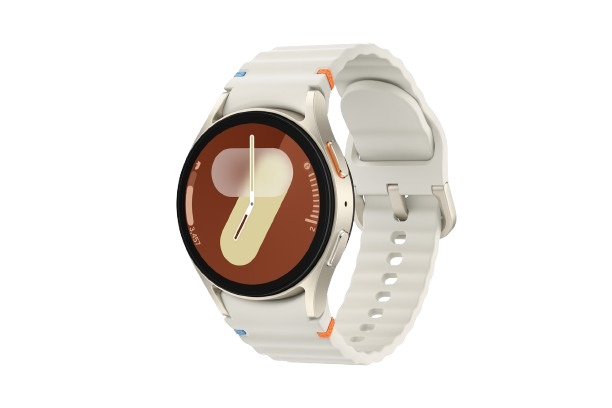
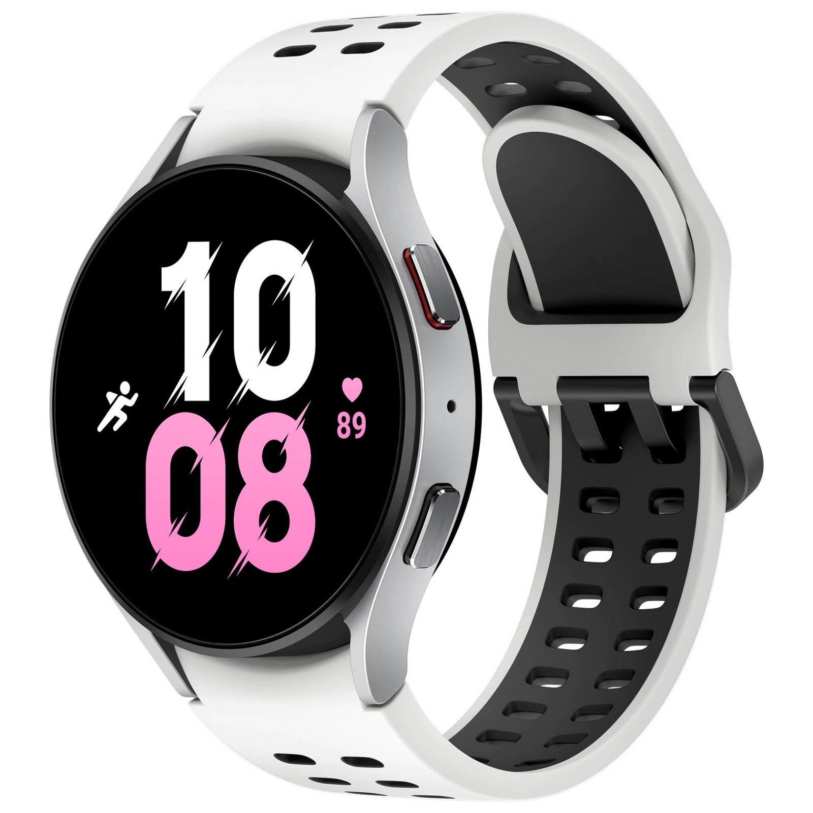
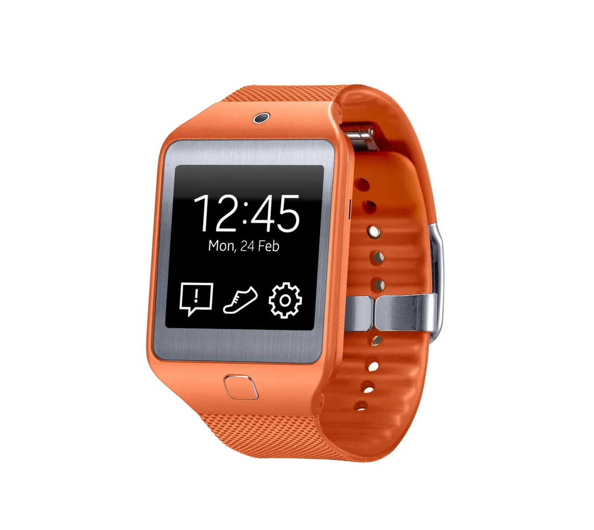

Samsung’s journey in the smartwatch industry is one of bold experimentation, technological leadership, and continuous refinement. From the earliest prototypes to the modern Galaxy Watch series, Samsung has built one of the most influential smartwatch lineups in tech.

Samsung’s smartwatch journey officially began in 2013 with the Samsung Galaxy Gear.
Key Features:

Samsung expanded rapidly by launching multiple models, testing designs and use cases.
Samsung’s Strategy:

Samsung introduced the rotating bezel, a fast and intuitive way to navigate apps.

More durability, bigger batteries, and better sensors made this era feel more premium.

Samsung renamed the lineup to Galaxy Watch to unify branding and strengthen the ecosystem.

Health features became the focus during this era of smart wellness tracking.

Samsung partnered with Google, shifting from Tizen to Wear OS for more apps and better Android integration.

Premium materials, better durability, smarter tracking, and improved performance defined this era.